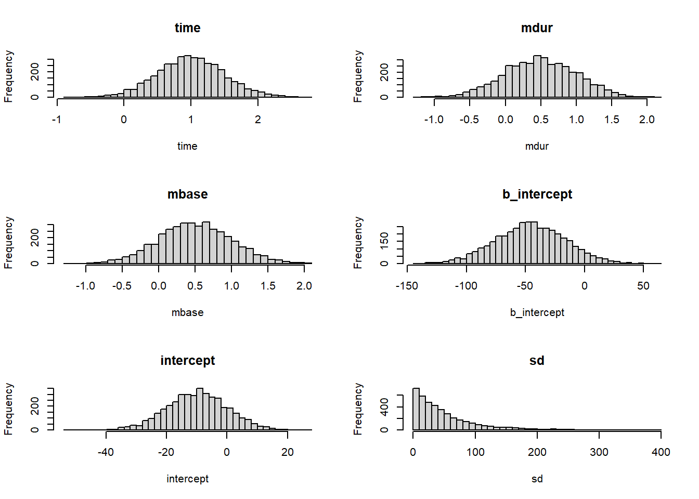
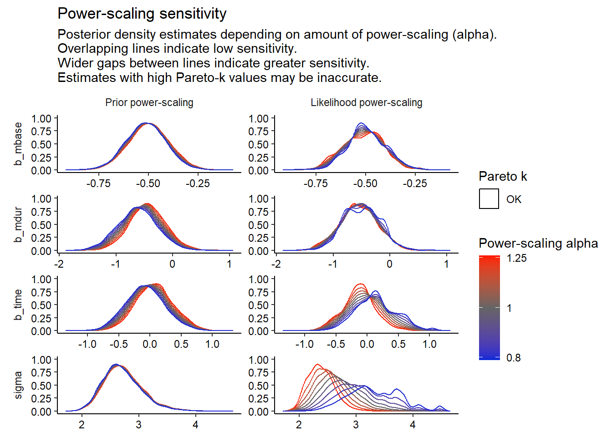
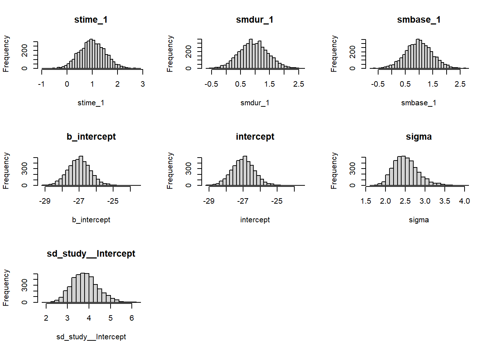
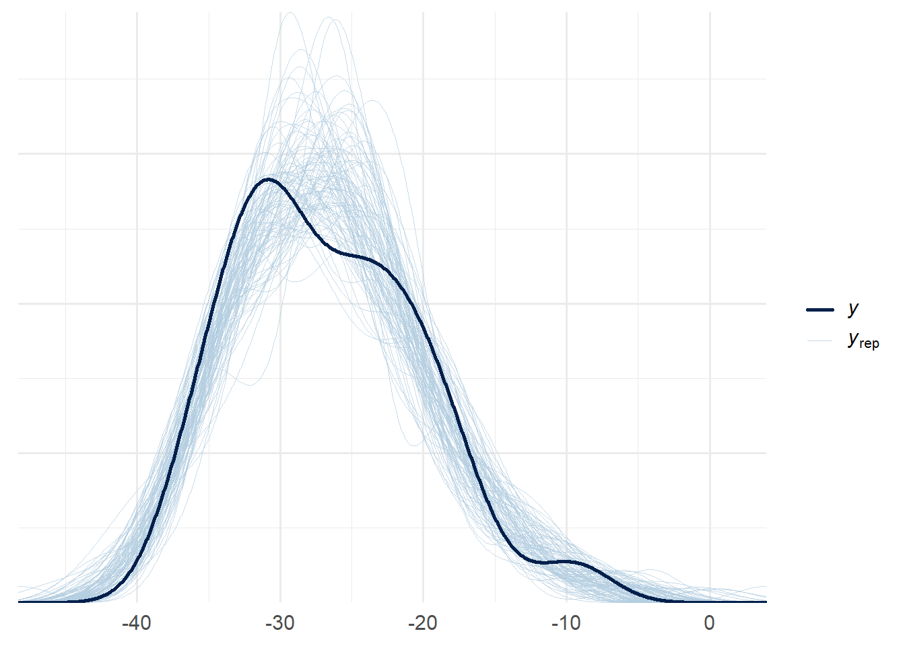
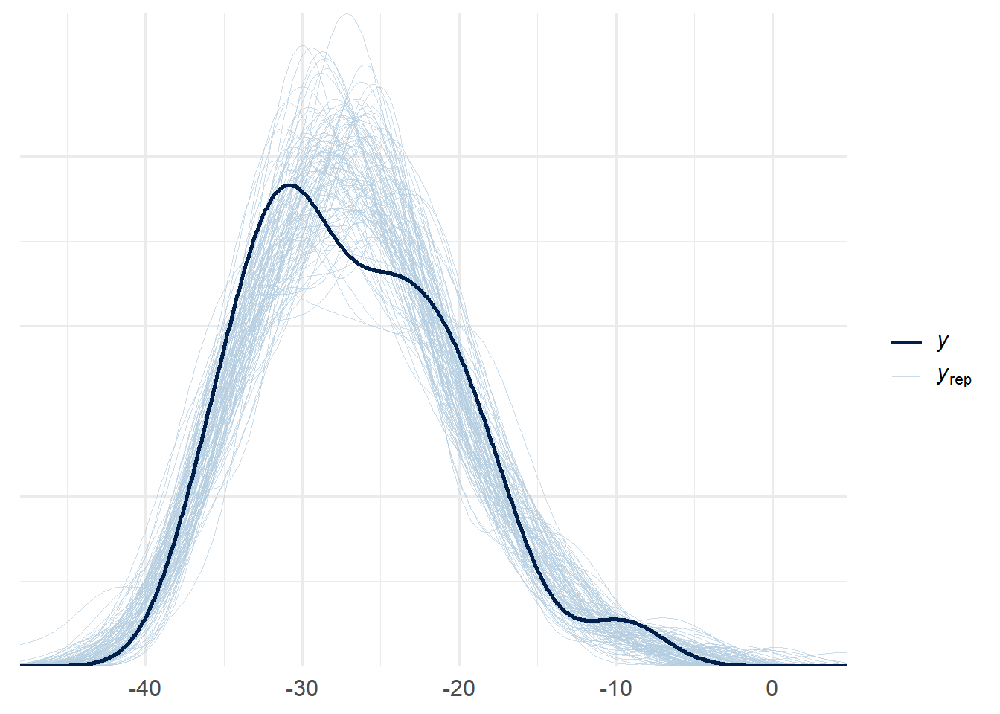
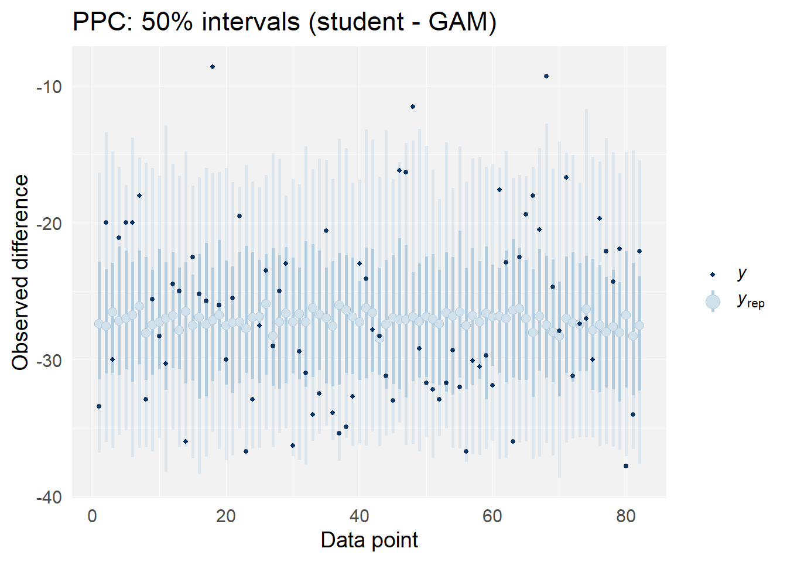
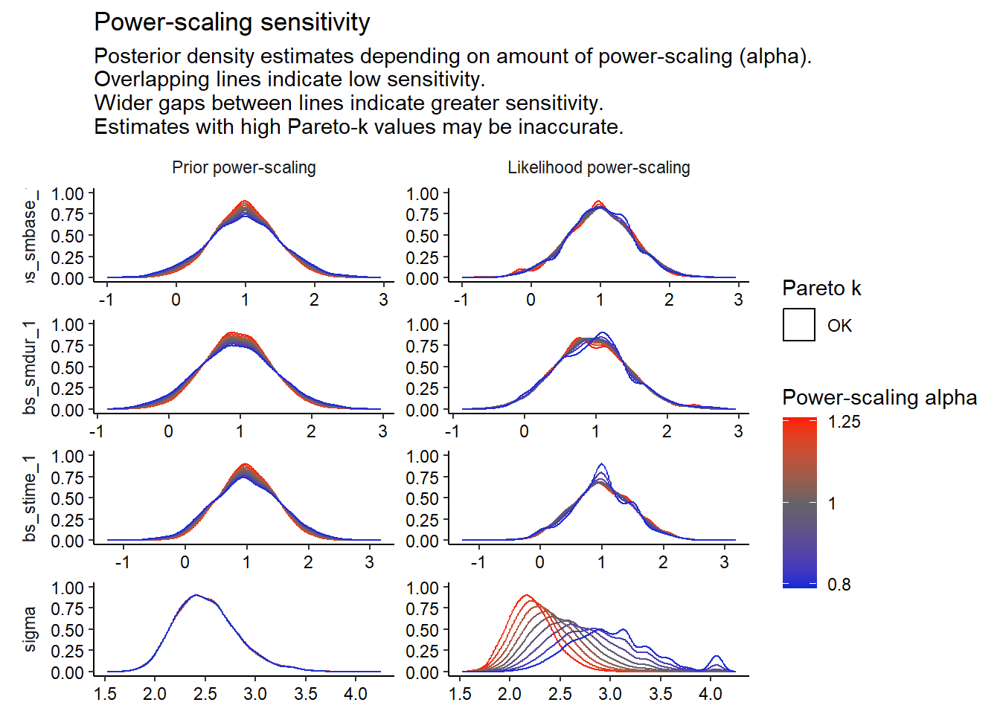

library(bayesplot)
library(cmdstanr)
library(dplyr)
library(ggplot2)
library(ggdist) # for stat_dotsinterval
library(gridExtra)
library(posterior)
library(brms)
library(rstan)
library(plotly)
library(patchwork)
library(knitr)
library(kableExtra)
library(metadat)
library(metafor)
library(priorsense)
library(testthat)
# Globally specfiy cmdstan backend for brms
options(brms.backend="cmdstanr")
# Tell brms to cache results if possible
options(brms.file_refit="on_change")
# Set more readable themes with bigger font for plotting packages
ggplot2::theme_set(theme_minimal(base_size = 14))
bayesplot::bayesplot_theme_set(theme_minimal(base_size = 14))Bayesian Workflow Diary
1 Set up
AI tools are used to give hints on plots and codes.
2 Loading Data and Preprocessing
Use this section of the diary for loading your dataset of choice and performing any necessary preprocessing. This could include cleaning the data, transforming variables, or creating new variables. Remember that you should be able to re-run or modify this code if needed during the interactive presentations.
study y1i v1i y2i v2i y3i v3i y4i v4i
1 Alegret (2001) -33.4 14.3 NA NA NA NA NA NA
2 Barichella (2003) -20.0 7.3 NA NA -30.0 5.7 NA NA
3 Berney (2002) -21.1 7.3 NA NA NA NA NA NA
4 Burchiel (1999) -20.0 8.0 -20.0 8.0 -18.0 5.0 NA NA
5 Chen (2003) NA NA -32.9 125.0 NA NA NA NA
6 DBS for PD Study Grp. (2001) -25.6 4.2 -28.3 4.6 NA NA NA NA
7 Dujardin (2001) -30.3 88.2 NA NA -24.5 170.7 NA NA
8 Esselink (2004) NA NA -25.0 17.0 NA NA NA NA
9 Funkiewiez (2003) NA NA NA NA -36.0 5.0 NA NA
10 Herzog (2003) NA NA -22.5 6.8 -25.2 11.0 -25.7 15.4
mdur mbase
1 16.1 53.6
2 13.5 45.3
3 13.6 45.6
4 13.6 48.0
5 12.1 65.7
6 14.4 54.0
7 13.1 65.0
8 12.0 51.5
9 14.0 56.0
10 15.0 44.9 ### load metafor package
### create long format dataset
dat <- reshape(dat, direction="long", idvar="study", v.names=c("yi","vi"),
varying=list(c(2,4,6,8), c(3,5,7,9)))
dat <- dat[order(study, time),]
### remove missing measurement occasions from dat.long
dat <- dat[!is.na(yi),]
dat$study <- as.integer(as.factor(dat$study))
rownames(dat) <- NULL
head(dat, 10)
study mdur mbase time yi vi
1 1 16.1 53.6 1 -33.4 14.3
2 2 13.5 45.3 1 -20.0 7.3
3 2 13.5 45.3 3 -30.0 5.7
4 3 13.6 45.6 1 -21.1 7.3
5 4 13.6 48.0 1 -20.0 8.0
6 4 13.6 48.0 2 -20.0 8.0
7 4 13.6 48.0 3 -18.0 5.0
8 5 12.1 65.7 2 -32.9 125.0
9 6 14.4 54.0 1 -25.6 4.2
10 6 14.4 54.0 2 -28.3 4.6 3 Week 1: Exploratory Data Analysis and Choosing a Research Question
3.1 Research Question
- Does the deep-brain stimulation has significant positive effects on patients with Parkinson’s disease?
- If so, what is the trend of their UPDRS score over the time?
- Do mean disease duration and mean baseline UPDRS scores have effects on this trend? What effects?
3.2 Data Visualization
### plot data
library(ggplot2)
ggplot(dat, aes(x = time, y = yi, color = factor(study), group = study)) +
geom_line() +
geom_point() +
labs(x = "Time Point", y = "Mean Difference") +
theme_minimal() +
theme(axis.text.x = element_text(angle = 45, hjust = 1)) +
guides(color = FALSE)
Intuitively, this treatment roughly has a positive effect over the time, but not too obvious from the visualization.
3.3 Initial model
To be simple at the start, I picked the Bayesian linear regression model at the first attempt, because it’s concise enough and considers all of the factors from the dataset. I can adjust my model based on the performance of this linear model.
Model: \[\Delta y_{it}=\beta_0 + \beta_1*time + \beta_2*mdur_i+ \beta_3*mbase_i + b_i + \epsilon_{it}\] \[b_i\sim\mathbf{N}(0,\sigma_b^2),\quad\epsilon\sim\mathbf{N}(0,\sigma^2)\]
Prior: \[\beta_\_\sim\mathbf{N}(0,5),\quad\sigma_\_\sim\mathbf{C}(0,2)\]
3.4 Model Definition and Fitting
3.5 Observations and Problems
Rhat of all the parameters is 1.00, and it seems that the Markov chains converged well enough.
From the point estimate of time coefficient, it seems that this stimulation even has a slightly positive impact on patients’ performance. Is it reliable? The CI of the time coefficient is [-1.18,0.20], so it’s hard to say and we need more evaluation methods to check the performance of this model but I’ll pause here because it’s just an attempt.
mdur and mbase both have positive impacts on patients’ performance improvement from this model’s result.
The linear Bayesian model and prior choices seem too casual, and I plan to discover some models which are more compatible with this problem.
4 Week 2: Prior Choice
4.1 Proposed priors
A correct prior choice should not be influenced by our dataset, so I will choose the priors based on common senses and some materials online.
It’s shown from the Internet that Deep-brain stimulation is a widely used treatment on Parkinson patients. Thus, we tend to believe that it has a positive effect on patients over the time and we prefer the mean of prior distribution of \(\beta_1\) to be negative (when \(\Delta y\) decreases, the performance is better than the baseline). I chose \(\mathbf{N}(1.0, 0.5^2)\) as the prior, distributing some possibilities that it doesn’t have significant effect or even negative effects.
Higher disease duration and higher baseline UPDRS scores imply that the diseases are more severe, and it tend to be easier to get a higher improvement from the baseline. However, there are also some cases that the diseases are too severe to achieve an improvement, so for \(\beta_2\) and \(\beta_3\) I chose \(\mathbf{N}(0.5, 0.5^2)\) as priors.
For intercept \(\beta_0\), I know usually there will be improvements. So I would choose \(\mathbf{N}(-10, 10^2)\) as the prior.
The prior of the error term : \(\quad\sigma\sim\mathbf{Exp}(0.02)\)
4.2 New Priors in brms and Prior Predictive Check
model_formula <- bf(yi ~ time + mdur + mbase + (1 | study))
priors <- c(
prior(normal(1.0, 0.5), class = "b", coef = "time"),
prior(normal(0.5, 0.5), class = "b", coef = "mdur"),
prior(normal(0.5, 0.5), class = "b", coef = "mbase"),
prior(normal(-10, 10), class = "Intercept"),
prior(exponential(0.02), class = "sd")
)
fit <- brm(
formula = model_formula,
data = dat,
family = gaussian(),
prior = priors,
sample_prior = "only",
chains = 4,
iter = 2000,
control = list(adapt_delta = 0.95)
)Warning: Method 'posterior_samples' is deprecated. Please see ?as_draws for
recommended alternatives.par(mfrow=c(3,2))
hist(prior_samples$b_time, main = "time", xlab = "time", breaks = 30)
hist(prior_samples$b_mdur, main = "mdur", xlab = "mdur", breaks = 30)
hist(prior_samples$b_mbase, main = "mbase", xlab = "mbase", breaks = 30)
hist(prior_samples$b_Intercept, main = "b_intercept", xlab = "b_intercept", breaks = 30)
hist(prior_samples$Intercept, main = "intercept", xlab = "intercept", breaks = 30)
hist(prior_samples$sd, main = "sd", xlab = "sd", breaks = 30)

4.3 Discussion on Prior Predictive Check for Prior Choices
From the plots, we can see that the prior predictions tend to overestimate \(y\), and the predictions are more concentrated on smaller intervals. This check had the influence on the prior choice of intercept and sd term. Previously, intercept’s prior distribution’s mean value was zero, which makes \(y_{rep}\) have a large deviation to the training data. I also adjusted the parameter of the exponential distribution to avoid inappropriately narrow distribution of prior predictive data.
5 Week 3: Model Fitting and Checking
5.1 Parameter Estimates and Model Fit Check
Family: gaussian
Links: mu = identity; sigma = identity
Formula: yi ~ time + mdur + mbase + (1 | study)
Data: dat (Number of observations: 82)
Draws: 4 chains, each with iter = 2000; warmup = 1000; thin = 1;
total post-warmup draws = 4000
Multilevel Hyperparameters:
~study (Number of levels: 46)
Estimate Est.Error l-95% CI u-95% CI Rhat Bulk_ESS Tail_ESS
sd(Intercept) 4.72 0.67 3.53 6.13 1.00 1017 1781
Regression Coefficients:
Estimate Est.Error l-95% CI u-95% CI Rhat Bulk_ESS Tail_ESS
Intercept 6.95 6.94 -7.24 20.12 1.00 1350 1936
time -0.00 0.31 -0.59 0.62 1.00 3335 2985
mdur -0.53 0.33 -1.18 0.12 1.00 1556 2174
mbase -0.51 0.10 -0.70 -0.31 1.00 1088 1806
Further Distributional Parameters:
Estimate Est.Error l-95% CI u-95% CI Rhat Bulk_ESS Tail_ESS
sigma 2.72 0.34 2.14 3.49 1.00 1542 2525
Draws were sampled using sample(hmc). For each parameter, Bulk_ESS
and Tail_ESS are effective sample size measures, and Rhat is the potential
scale reduction factor on split chains (at convergence, Rhat = 1).Warning: Method 'posterior_samples' is deprecated. Please see ?as_draws for
recommended alternatives.par(mfrow=c(3,2))
hist(post_samples$b_time, main = "time", xlab = "time", breaks = 30)
hist(post_samples$b_mdur, main = "mdur", xlab = "mdur", breaks = 30)
hist(post_samples$b_mbase, main = "mbase", xlab = "mbase", breaks = 30)
hist(post_samples$b_Intercept, main = "b_intercept", xlab = "b_intercept", breaks = 30)
hist(post_samples$Intercept, main = "intercept", xlab = "intercept", breaks = 30)
hist(post_samples$sd, main = "sigma", xlab = "sigma", breaks = 30)From the results of the model fitting, we have these conclusions:
All of the parameters are converging well in the Markov chains, because Rhat are all \(1.00\).
Time, mdur, mbase all have negative impacts on \(y\), which implies that this treatment tend to help alleviate the disease over the time, and the effects are more significant when the baseline is more severe.
These conclusions make sense to some extents, because the posterior intervals are consistent with our assumptions from the prior.
5.2 Posterior predictive checks

post_pred <- posterior_predict(fit, ndraws = length(dat$yi))
color_scheme_set("blue")
ppc_intervals(
y = dat$yi,
yrep = t(post_pred),
x = dat$rownames,
prob = 0.5
) +
labs(
x = "Data point",
y = "Observed difference",
title = "PPC: 50% intervals",
) +
panel_bg(fill = "gray95", color = NA) +
grid_lines(color = "white")
From the distribution of \(y_{rep}\), we can see that they are approximately close to \(y\), but it seems that there are still some convergences, indicating that our model is too simple and inaccurate.
From the \(50%\) interval plot, we can see that most of the data points are falling into the \(50%\) intervals, but there are still some outlying points, and less points are falling into the inner intervals.
5.3 Influence and sensitivity checks
Warning: Found 19 observations with a pareto_k > 0.7 in model 'fit'. We
recommend to set 'moment_match = TRUE' in order to perform moment matching for
problematic observations.
Computed from 4000 by 82 log-likelihood matrix.
Estimate SE
elpd_loo -224.4 6.1
p_loo 37.7 4.1
looic 448.8 12.3
------
MCSE of elpd_loo is NA.
MCSE and ESS estimates assume MCMC draws (r_eff in [0.4, 1.8]).
Pareto k diagnostic values:
Count Pct. Min. ESS
(-Inf, 0.7] (good) 63 76.8% 230
(0.7, 1] (bad) 19 23.2% <NA>
(1, Inf) (very bad) 0 0.0% <NA>
See help('pareto-k-diagnostic') for details.
The PSIS-LOO plot shows that our posterior rely on some certain data points too much, because many of them are over 0.7, indicating some overfitting issues.
Sensitivity based on cjs_dist:
# A tibble: 53 × 4
variable prior likelihood diagnosis
<chr> <dbl> <dbl> <chr>
1 b_Intercept 0.185 0.111 prior-data conflict
2 b_time 0.182 0.415 prior-data conflict
3 b_mdur 0.196 0.0668 prior-data conflict
4 b_mbase 0.0652 0.0710 prior-data conflict
5 sd_study__Intercept 0.0436 0.324 -
6 sigma 0.0520 1.24 prior-data conflict
7 Intercept 0.0331 0.0851 -
8 r_study[1,Intercept] 0.0235 0.254 -
9 r_study[2,Intercept] 0.0321 0.186 -
10 r_study[3,Intercept] 0.0419 0.104 -
# ℹ 43 more rows
The power-scaling sensitivity plot shows that all of our parameters do not rely on the prior assumption too much. It means that our model is robust from this perspective.
An exception is that the posterior are very sensitive to the likelihood of \(\sigma\), which might be a issue. The pareto k value of a much lower power scaling of likelihood is quite high, and it indicates some inaccuracy with it.
6 Week 4: Extending Models and Model Selection
6.1 Idea of Model Extension
This extension is from the idea of introducing smooth function to all of the variables, allowing for more complex and non-linear structure of our model. We provided two types of this extension, one is from Gaussian family and another one is from Student family. We will conduct model evaluations and comparisons to select the best model we use.
6.2 Model Fitting
library(mgcv)
model_formula <- bf(yi ~ s(time, k=4) + s(mdur) + s(mbase) + (1|study))
priors <- c(
set_prior("normal(1.0, 0.5)", class = "b", coef = "smbase_1"),
set_prior("normal(1.0, 0.5)", class = "b", coef = "smdur_1"),
set_prior("normal(1.0, 0.5)", class = "b", coef = "stime_1"),
set_prior("normal(-10, 10)", class = "Intercept"),
set_prior("exponential(0.02)", class = "sd"),
set_prior("exponential(0.02)", class = "sd", group = "study"),
set_prior("exponential(0.02)", class = "sd", coef = "Intercept", group = "study"),
set_prior("exponential(0.02)", class = "sds"),
set_prior("exponential(0.02)", class = "sds", coef = "s(mbase)"),
set_prior("exponential(0.02)", class = "sds", coef = "s(mdur)"),
set_prior("exponential(0.02)", class = "sds", coef = "s(time, k = 4)"),
set_prior("exponential(0.02)", class = "sigma")
)
fit_new <- brm(
formula = model_formula,
data = dat,
family = gaussian(),
prior = priors,
chains = 4,
iter = 2000,
control = list(adapt_delta = 0.95)
)
fit_new_2 <- brm(
formula = model_formula,
data = dat,
family = student(),
prior = priors,
chains = 4,
iter = 2000,
control = list(adapt_delta = 0.95)
)6.3 Fitting Results
Warning: There were 18 divergent transitions after warmup. Increasing
adapt_delta above 0.95 may help. See
http://mc-stan.org/misc/warnings.html#divergent-transitions-after-warmup Family: gaussian
Links: mu = identity; sigma = identity
Formula: yi ~ s(time, k = 4) + s(mdur) + s(mbase) + (1 | study)
Data: dat (Number of observations: 82)
Draws: 4 chains, each with iter = 2000; warmup = 1000; thin = 1;
total post-warmup draws = 4000
Smoothing Spline Hyperparameters:
Estimate Est.Error l-95% CI u-95% CI Rhat Bulk_ESS Tail_ESS
sds(stime_1) 14.53 14.96 2.65 53.58 1.00 1254 2204
sds(smdur_1) 7.59 6.75 0.85 26.42 1.01 950 1280
sds(smbase_1) 7.70 4.44 2.69 19.60 1.00 1020 1314
Multilevel Hyperparameters:
~study (Number of levels: 46)
Estimate Est.Error l-95% CI u-95% CI Rhat Bulk_ESS Tail_ESS
sd(Intercept) 3.81 0.62 2.71 5.12 1.01 926 1964
Regression Coefficients:
Estimate Est.Error l-95% CI u-95% CI Rhat Bulk_ESS Tail_ESS
Intercept -27.01 0.67 -28.32 -25.71 1.00 1490 1836
stime_1 0.99 0.50 0.03 2.00 1.00 6503 2914
smdur_1 0.94 0.50 -0.04 1.95 1.00 5956 2630
smbase_1 0.99 0.49 -0.01 1.97 1.00 5853 2838
Further Distributional Parameters:
Estimate Est.Error l-95% CI u-95% CI Rhat Bulk_ESS Tail_ESS
sigma 2.51 0.31 2.00 3.21 1.01 1362 2026
Draws were sampled using sample(hmc). For each parameter, Bulk_ESS
and Tail_ESS are effective sample size measures, and Rhat is the potential
scale reduction factor on split chains (at convergence, Rhat = 1).Warning: Method 'posterior_samples' is deprecated. Please see ?as_draws for
recommended alternatives.par(mfrow = c(3,3))
hist(post_samples$`bs_stime_1`, main = "stime_1", xlab = "stime_1", breaks = 30)
hist(post_samples$`bs_smdur_1`, main = "smdur_1", xlab = "smdur_1", breaks = 30)
hist(post_samples$`bs_smbase_1`, main = "smbase_1", xlab = "smbase_1", breaks = 30)
hist(post_samples$`b_Intercept`, main = "b_intercept", xlab = "b_intercept", breaks = 30)
hist(post_samples$`Intercept`, main = "intercept", xlab = "intercept", breaks = 30)
hist(post_samples$`sigma`, main = "sigma", xlab = "sigma", breaks = 30)
hist(post_samples$`sd_study__Intercept`, main = "sd_study__Intercept", xlab = "sd_study__Intercept", breaks = 30)
par(mfrow = c(1,1))
Warning: Parts of the model have not converged (some Rhats are > 1.05). Be
careful when analysing the results! We recommend running more iterations and/or
setting stronger priors.Warning: There were 6 divergent transitions after warmup. Increasing
adapt_delta above 0.95 may help. See
http://mc-stan.org/misc/warnings.html#divergent-transitions-after-warmup Family: student
Links: mu = identity; sigma = identity; nu = identity
Formula: yi ~ s(time, k = 4) + s(mdur) + s(mbase) + (1 | study)
Data: dat (Number of observations: 82)
Draws: 4 chains, each with iter = 2000; warmup = 1000; thin = 1;
total post-warmup draws = 4000
Smoothing Spline Hyperparameters:
Estimate Est.Error l-95% CI u-95% CI Rhat Bulk_ESS Tail_ESS
sds(stime_1) 15.60 15.45 2.65 53.95 1.04 74 752
sds(smdur_1) 7.67 7.46 0.58 28.99 1.01 612 679
sds(smbase_1) 8.97 6.65 2.64 30.55 1.08 38 20
Multilevel Hyperparameters:
~study (Number of levels: 46)
Estimate Est.Error l-95% CI u-95% CI Rhat Bulk_ESS Tail_ESS
sd(Intercept) 3.88 0.59 2.83 5.13 1.01 949 1905
Regression Coefficients:
Estimate Est.Error l-95% CI u-95% CI Rhat Bulk_ESS Tail_ESS
Intercept -27.10 0.72 -28.42 -25.71 1.04 95 80
stime_1 0.98 0.50 0.00 1.97 1.01 1456 2786
smdur_1 0.97 0.49 -0.01 1.90 1.01 1641 2833
smbase_1 0.95 0.50 0.00 1.92 1.01 412 3036
Further Distributional Parameters:
Estimate Est.Error l-95% CI u-95% CI Rhat Bulk_ESS Tail_ESS
sigma 2.32 0.33 1.78 3.06 1.04 102 1995
nu 21.53 14.26 4.92 58.18 1.02 171 2224
Draws were sampled using sample(hmc). For each parameter, Bulk_ESS
and Tail_ESS are effective sample size measures, and Rhat is the potential
scale reduction factor on split chains (at convergence, Rhat = 1).Warning: Method 'posterior_samples' is deprecated. Please see ?as_draws for
recommended alternatives.par(mfrow = c(3,3))
hist(post_samples$`bs_stime_1`, main = "stime_1", xlab = "stime_1", breaks = 30)
hist(post_samples$`bs_smdur_1`, main = "smdur_1", xlab = "smdur_1", breaks = 30)
hist(post_samples$`bs_smbase_1`, main = "smbase_1", xlab = "smbase_1", breaks = 30)
hist(post_samples$`b_Intercept`, main = "b_intercept", xlab = "b_intercept", breaks = 30)
hist(post_samples$`Intercept`, main = "intercept", xlab = "intercept", breaks = 30)
hist(post_samples$`sigma`, main = "sigma", xlab = "sigma", breaks = 30)
hist(post_samples$`sd_study__Intercept`, main = "sd_study__Intercept", xlab = "sd_study__Intercept", breaks = 30)
par(mfrow = c(1,1))From the diagnosis, parameters of both model are converging well, which means that our samples are representing the actual posterior distribution well.
6.4 Posterior Predictive Check

post_pred <- posterior_predict(fit_new, ndraws = length(dat$yi))
color_scheme_set("blue")
ppc_intervals(
y = dat$yi,
yrep = t(post_pred),
x = dat$rownames,
prob = 0.5
) +
labs(
x = "Data point",
y = "Observed difference",
title = "PPC: 50% intervals (gaussian - GAM)",
) +
panel_bg(fill = "gray95", color = NA) +
grid_lines(color = "white")
post_pred <- posterior_predict(fit_new_2, ndraws = length(dat$yi))
color_scheme_set("blue")
ppc_intervals(
y = dat$yi,
yrep = t(post_pred),
x = dat$rownames,
prob = 0.5
) +
labs(
x = "Data point",
y = "Observed difference",
title = "PPC: 50% intervals (student - GAM)",
) +
panel_bg(fill = "gray95", color = NA) +
grid_lines(color = "white")
With new models, more data points are falling into the credible intervals, which implies a greater prediction ability.
6.5 Prior Sensitivity Check
Sensitivity based on cjs_dist:
# A tibble: 74 × 4
variable prior likelihood diagnosis
<chr> <dbl> <dbl> <chr>
1 b_Intercept 0.0222 0.0994 -
2 bs_stime_1 0.0777 0.0238 strong prior / weak likelihood
3 bs_smdur_1 0.0830 0.0644 prior-data conflict
4 bs_smbase_1 0.0865 0.0400 strong prior / weak likelihood
5 sd_study__Intercept 0.00675 0.397 -
6 sds_stime_1 0.163 0.168 prior-data conflict
7 sds_smdur_1 0.0519 0.0792 prior-data conflict
8 sds_smbase_1 0.0354 0.101 -
9 sigma 0.00585 1.17 -
10 Intercept 0.0222 0.0994 -
# ℹ 64 more rowsSensitivity based on cjs_dist:
# A tibble: 75 × 4
variable prior likelihood diagnosis
<chr> <dbl> <dbl> <chr>
1 b_Intercept 0.0173 0.256 -
2 bs_stime_1 0.0863 0.0746 prior-data conflict
3 bs_smdur_1 0.0903 0.122 prior-data conflict
4 bs_smbase_1 0.0860 0.0775 prior-data conflict
5 sd_study__Intercept 0.00945 0.480 -
6 sds_stime_1 0.139 0.420 prior-data conflict
7 sds_smdur_1 0.0629 0.142 prior-data conflict
8 sds_smbase_1 0.0117 0.861 -
9 sigma 0.0242 1.17 -
10 nu 0.319 0.153 prior-data conflict
# ℹ 65 more rows

Both of the new models behave well in prior sensitivity checks.
6.6 LOO Model Comparison and Selection
Warning: Found 23 observations with a pareto_k > 0.7 in model 'fit_new'. We
recommend to set 'moment_match = TRUE' in order to perform moment matching for
problematic observations.Warning: Found 20 observations with a pareto_k > 0.7 in model 'fit_new_2'. We
recommend to set 'moment_match = TRUE' in order to perform moment matching for
problematic observations.loo_comparison <- loo_compare(loo_check, loo_check_new, loo_check_new_2)
model_aliases <- c(
"fit_new" = "Gaussian GAM",
"fit_new_2" = "Student GAM",
"fit" = "Linear"
)
loo_comparison_df <- as.data.frame(loo_comparison)
loo_comparison_df$model <- rownames(loo_comparison_df)
rownames(loo_comparison_df) <- NULL
loo_comparison_df <- loo_comparison_df %>%
mutate(model = recode(model, !!!model_aliases))
loo_comparison_df <- loo_comparison_df %>%
mutate(across(where(is.numeric), ~ round(., 2)))
loo_comparison_df <- loo_comparison_df[, c("model", "elpd_diff", "se_diff")]
kable(loo_comparison_df, col.names = c("Model", "ELPD Diff", "SE Diff"), caption = "LOO Comparison Results")| Model | ELPD Diff | SE Diff |
|---|---|---|
| Gaussian GAM | 0.00 | 0.00 |
| Student GAM | -2.35 | 1.14 |
| Linear | -7.30 | 3.82 |
From the LOO comparison result, we used the prediction method to select the best model we provided. This form shows that the Gaussian GAM model has a significant better prediction ability than the other two. Therefore, we chose this model as our final prediction model. However, these models provided still behave badly within the Pareto-k check, which means a high potential of overfitting.
7 Week 5: Interpreting and Presenting Model Results
7.1 Introduction (Informal Case Study)
(In this part, we assume that we are presenting our result informally to people who are curious about this treatment for Parkinson’s disease. We will briefly show what our conclusion is with some brief and clear visualizations).
With the experiment data from 46 studies examining the effects of deep-brain stimulation, we conduct an analysis about whether this treatment have effect and what effect it has on patients. What’s more, we also researched on the effect of disease duration and mean baseline UPDRS scores on the effect of treatment over the time.
The data we used is results from 46 studies examining the effects of deep-brain stimulation on motor skills of patients with Parkinson’s disease. We used our model fitting on the data, and got our predictions as below.
7.2 Visualization and Interpretation
These visualizations show how these factors are influencing the treatment effects from our prediction.
library(brms)
library(ggplot2)
library(dplyr)
max_study <- max(dat$study)
mdur_values <- c(10, 15, 20)
all_results <- data.frame()
for (mdur in mdur_values) {
new_data <- data.frame(
time = seq(0.25, 5, by = 0.25),
mdur = rep(mdur, length.out = length(seq(0.25, 5, by = 0.25))),
mbase = rep(50, length.out = length(seq(0.25, 5, by = 0.25))),
study = rep(max_study + 1, length.out = length(seq(0.25, 5, by = 0.25)))
)
predictions <- posterior_epred(fit_new, newdata = new_data, re_formula = NA)
pred_summary <- apply(predictions, 2, function(x) {
c(mean = mean(x), lower = quantile(x, 0.25), upper = quantile(x, 0.75))
})
pred_summary_df <- as.data.frame(t(pred_summary))
colnames(pred_summary_df) <- c("mean", "lower", "upper")
result <- cbind(new_data, pred_summary_df)
result$combination <- paste("mdur =", mdur)
all_results <- rbind(all_results, result)
}
ggplot(all_results, aes(x = time, y = mean, color = combination)) +
geom_line(size = 1.5) +
geom_ribbon(aes(ymin = lower, ymax = upper, fill = combination), alpha = 0.05, show.legend = FALSE) +
geom_line(aes(y = lower), linetype = "dashed", size = 0.5) +
geom_line(aes(y = upper), linetype = "dashed", size = 0.5) +
labs(title = "Predicted Treatment Effects for Different Disease Durations",
x = "Time",
y = "Predicted Effects") +
theme_minimal() +
scale_color_discrete(name = "Disease Duration")Warning: Using `size` aesthetic for lines was deprecated in ggplot2 3.4.0.
ℹ Please use `linewidth` instead.mdur_fixed <- 15
mbase_values <- c(40, 50, 60)
all_results_mbase <- data.frame()
for (mbase in mbase_values) {
new_data <- data.frame(
time = seq(0.5, 5, by = 0.25),
mdur = rep(mdur_fixed, length.out = length(seq(0.5, 5, by = 0.25))),
mbase = rep(mbase, length.out = length(seq(0.5, 5, by = 0.25))),
study = rep(max_study + 1, length.out = length(seq(0.5, 5, by = 0.25)))
)
predictions <- posterior_epred(fit_new, newdata = new_data, re_formula = NA)
pred_summary <- apply(predictions, 2, function(x) {
c(mean = mean(x), lower = quantile(x, 0.25), upper = quantile(x, 0.75))
})
pred_summary_df <- as.data.frame(t(pred_summary))
colnames(pred_summary_df) <- c("mean", "lower", "upper")
result <- cbind(new_data, pred_summary_df)
result$combination <- paste("mbase =", mbase)
all_results_mbase <- rbind(all_results_mbase, result)
}
ggplot(all_results_mbase, aes(x = time, y = mean, color = combination)) +
geom_line(size = 1.5) +
geom_ribbon(aes(ymin = lower, ymax = upper, fill = combination), alpha = 0.05, show.legend = FALSE) +
geom_line(aes(y = lower), linetype = "dashed", size = 0.5) +
geom_line(aes(y = upper), linetype = "dashed", size = 0.5) +
labs(title = "Predicted Treatment Effects for Different Disease Severity Scores",
x = "Time",
y = "Predicted Effects") +
theme_minimal() +
scale_color_discrete(name = "Disease Severity Score")7.3 Conclusion
From these two plots, we first get mbase fixed and see what effect do mdur and time have on yi, and then get mdur fixed and see what effect do mbase and time have on yi.
We can see that when time is lower than 3, the treatment effect (compared to the baseline) are getting more significant over the time, but the differences are lower after 3 months. We infer that 3 months is an ideal time period for a good treatment. We can still continue it after 3 months as it’s not harmful, but it is not as effective as before.
The disease duration has a vague impact on the trend of the treatment effect, because we can see from the plot that confidence intervals are overlapping and there is no clear trend which direction these curves go.
In contrast, the severity of the disease has a clearer impact on the treatment effect. Higher UPDRS scores, which implies more severe disease, corresponds to stronger observed mean differences. This shows that DBS treatment has a stronger effect dealing with worse functioning patients with higher UPDRS scores.
In conclusion, we believe DBS is an effective way to relieve Parkinson’s disease. The effect of this treatment is the most significant after 3 months, and it tends to have stronger effects with lower functioning patients. This method is promising and worth a try.